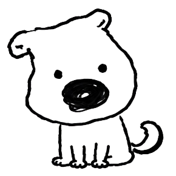

NestAI 不是帮你装修空间，而是帮你把想过的生活，转译成下一步可执行的空间改变。 NestAI doesn't decorate your space—it translates the life you want into actionable spatial changes.

需求发掘Discovery
年轻租住者面临的真实困境，以及现有解决方案的不足。 Real challenges faced by young renters and limitations of existing solutions.
无论是短期居住还是长期租住，年轻用户都有改造身边空间的强烈需求。 Young renters have strong needs to transform their living spaces.
不能打孔、不能换床、租期限制——这些真实约束在现有方案中被完全忽略。 No drilling, lease limits—real constraints ignored by existing solutions.
小红书、Pinterest 上的灵感图往往来自精心设计的样板间，与用户的真实空间差距甚远。 Inspiration from Xiaohongshu often comes from staged showrooms.
统一模板无法满足需求，需要根据用户个性与生活方式进行精确的室内改动输出。 Uniform templates fail; need precise output based on lifestyle.
需要结合空间限制、经济预算以及真实生活习惯，普通用户缺乏专业设计知识。 Combining constraints, budget, and habits requires expertise.
灵感丰富但缺乏个性化转译，用户难以落地Rich inspiration but lacks personalization
面向有房业主，不适合租住人群的临时性改造For homeowners, not renters
一站式装修服务平台，主打全房装修，门槛高周期长Full renovation, high barrier
生成效果图但忽视真实约束，缺乏行动指导Ignores real constraints
海外家居设计平台，灵感丰富但本地化不足，缺乏个性化转译Lacks localization
3D设计工具功能强大，但学习成本高，不适合快速轻量改造High learning curve
提供装修方案和案例，但缺乏针对租住场景的轻量解决方案Not for rental scenarios
用户旅程User Journey
六个阶段，持续循环。不是一次性工具，而是一个生长的系统。 Six stages, continuous cycle. Not a one-time tool, but a growing system.
Grow / Next / Me 三大 TabThree main tabs
拍照或上传房间Take or upload photos
AI 动态问卷AI dynamic survey
0元 / 低成本 / 进阶改造Free / Low-cost / Advanced
收藏到 Next 行动夹Save to Next folder
执行后拍照记录改变Document changes with photos
一封信 + Living MemoryLetter & Living Memory
Grow / Next / Me 三大 Tab 引导用户进入空间生活方式生长之旅。 Three tabs guide users into the journey of spatial lifestyle growth.
技术架构Architecture
从前端到 AI 层，从状态管理到数据库，每一层都有深思熟虑的技术选择。 Deliberate tech choices at every layer, from frontend to AI layer, state management to database.
Prompt 工程Prompt Engineering
4 个精心设计的 Prompt，融合空间设计、空间心理学、行为经济学、文化研究。不是简单的 AI 调用，而是领域知识的系统化编码。 4 carefully crafted prompts fusing spatial design, environmental psychology, behavioral economics, and cultural studies.
Vision LLM 理解空间结构、物件布局、氛围特征。输出生活方式线索假设，供后续问卷验证。Vision LLM analyzes spatial structure and atmosphere.
基于生活方式对话生成三档干预方案。"三层一体故事"确保各档共享核心意图。Generates three-tier intervention plans based on lifestyle chat.
生成温柔的一封信总结变化，给出下一个 Next。不设 KPI，不制造焦虑。Generates a gentle letter summarizing changes and suggesting next steps.
将方案转译为 ControlNet 指令。6 种风格方向，详细材质与灯光规格。Translates plans into ControlNet instructions with 6 style directions.
背景知识Knowledge
点击每个维度查看详细分析 Click each dimension for detailed analysis
泛年轻租住人群与宿舍人群Young renters & dorm residents
从一次性装修到持续生长From one-time renovation to continuous growth
低成本可逆的空间干预Low-cost reversible interventions
真实约束是创造力的来源Constraints are the source of creativity
生活方式从空间里长出来Lifestyle grows from space
数据主权与可解释 AIData sovereignty & explainable AI
Agent Pipeline
每个用户旅程背后，是严谨的 AI 工作流编排。状态机确保每一步都可靠、可回退、有优雅降级。 Behind every user journey is rigorous AI workflow orchestration. State machine ensures reliability, rollback, and graceful degradation.
Vision LLM
空间分析Space Analysis
动态问卷
推测验证Speculation Verification
干预规划
语义锚定Semantic Anchoring
ControlNet
Architectural Fidelity
记忆更新
循环生长Cyclic Growth
UI 设计UI Design
"极简"不是简陋，而是克制。每一处留白、每一个圆角、每一种字重，都有其存在的理由。 "Minimal" isn't simple—it's restrained. Every whitespace, every radius, every weight has its reason.
未来计划Roadmap
左右滑动探索发展路径 Swipe to explore the roadmap
产品哲学Philosophy
NestAI 不是把别人的模板搬进你的房间，
而是让你的生活方式从你的真实空间里长出来。 NestAI doesn't copy templates into your room—
it lets your lifestyle grow from your real space.